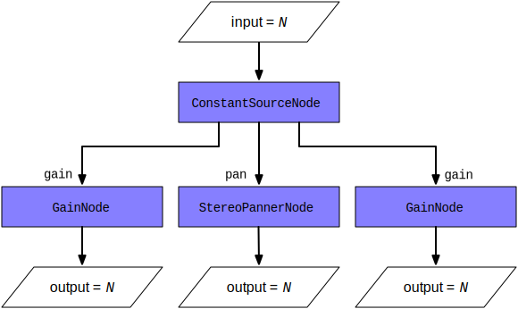

This article demonstrates how to use a {{domxref("ConstantSourceNode")}} to link multiple parameters together so they share the same value, which can be changed by setting the value of the {{domxref("ConstantSourceNode.offset")}} parameter.
You may have times when you want to have multiple audio parameters be linked so they share the same value even while being changed in some way. For example, perhaps you have a set of oscillators, and two of them need to share the same, configurable volume, or you have a filter that's been applied to certain inputs but not to all of them. You could use a loop and change the value of each affected {{domxref("AudioParam")}} one at a time, but there are two drawbacks to doing it that way: first, that's extra code that, as you're about to see, you don't have to write; and second, that loop uses valuable CPU time on your thread (likely the main thread), and there's a way to offload all that work to the audio rendering thread, which is optimized for this kind of work and may run at a more appropriate priority level than your code.
The solution is simple, and it involves using an audio node type which, at first glance, doesn't look all that useful: {{domxref("ConstantSourceNode")}}.
This is actually a really easy way to do something that sounds like it might be hard to do. You need to create a {{domxref("ConstantSourceNode")}} and connect it to all of the {{domxref("AudioParam")}}s whose values should be linked to always match each other. Since ConstantSourceNode's {{domxref("ConstantSourceNode.offset", "offset")}} value is sent straight through to all of its outputs, it acts as a splitter for that value, sending it to each connected parameter.
The diagram below shows how this works; an input value, N, is set as the value of the {{domxref("ConstantSourceNode.offset")}} property. The ConstantSourceNode can have as many outputs as necessary; in this case, we've connected it to three nodes: two {{domxref("GainNode")}}s and a {{domxref("StereoPannerNode")}}. So N becomes the value of the specified parameter ({{domxref("GainNode.gain", "gain")}} for the {{domxref("GainNode")}}s and pan for the {{domxref("StereoPannerNode")}}.

As a result, every time you change N (the value of the input {{domxref("AudioParam")}}, the values of the two GainNodes' gain properties and the value of the StereoPannerNode's pan propertry are all set to N as well.
Let's take a look at this technique in action. In this simple example, we create three {{domxref("OscillatorNode")}}s. Two of them have adjustable gain, controlled using a shared input control. The other oscillator has a fixed volume.
The HTML content for this example is primarily a button to toggle the oscillator tones on and off and an {{HTMLElement("input")}} element of type range to control the volume of two of the three oscillators.
<div class="controls">
<div class="left">
<div id="playButton" class="button">
▶️
</div>
</div>
<div class="right">
<span>Volume: </span>
<input type="range" min="0.0" max="1.0" step="0.01"
value="0.8" name="volume" id="volumeControl">
</div>
</div>
<p>Use the button above to start and stop the tones, and the volume control to
change the volume of the notes E and G in the chord.</p>
.controls {
width: 400px;
position: relative;
vertical-align: middle;
height: 44px;
}
.button {
font-size: 32px;
cursor: pointer;
user-select: none;
-moz-user-select: none;
-webkit-user-select: none;
-ms-user-select: none;
-o-user-select: none;
}
.right {
width: 50%;
font: 14px "Open Sans", "Lucida Grande", "Arial", sans-serif;
position: absolute;
right: 0;
display: table-cell;
vertical-align: middle;
}
.right span {
vertical-align: middle;
}
.right input {
vertical-align: baseline;
}
.left {
width: 50%;
position: absolute;
left: 0;
display: table-cell;
vertical-align: middle;
}
.left span, .left input {
vertical-align: middle;
}
Now let's take a look at the JavaScript code, a piece at a time.
Let's start by looking at the global variable initialization.
let context = null; let playButton = null; let volumeControl = null; let oscNode1 = null; let oscNode2 = null; let oscNode3 = null; let constantNode = null; let gainNode1 = null; let gainNode2 = null; let gainNode3 = null; let playing = false;
These variables are:
contextplayButton and volumeControloscNode1, oscNode2, and oscNode3gainNode1, gainNode2, and gainNode3gainNode2 and gainNode3 will be linked together to have the same, adjustable, value using the {{domxref("ConstantSourceNode")}}.constantNodegainNode2 and gainNode3 together.playingNow let's look at the setup() function, which is our handler for the window's {{event("load")}} event; it handles all the initialization tasks that require the DOM to be in place.
function setup() {
context = new (window.AudioContext || window.webkitAudioContext)();
playButton = document.querySelector("#playButton");
volumeControl = document.querySelector("#volumeControl");
playButton.addEventListener("click", togglePlay, false);
volumeControl.addEventListener("input", changeVolume, false);
gainNode1 = context.createGain();
gainNode1.gain.value = 0.5;
gainNode2 = context.createGain();
gainNode3 = context.createGain();
gainNode2.gain.value = gainNode1.gain.value;
gainNode3.gain.value = gainNode1.gain.value;
volumeControl.value = gainNode1.gain.value;
constantNode = context.createConstantSource();
constantNode.connect(gainNode2.gain);
constantNode.connect(gainNode3.gain);
constantNode.start();
gainNode1.connect(context.destination);
gainNode2.connect(context.destination);
gainNode3.connect(context.destination);
}
window.addEventListener("load", setup, false);
First, we get access to the window's {{domxref("AudioContext")}}, stashing the reference in context. Then we get references to the control widgets, setting playButton to reference the play button and volumeControl to reference the slider control that the user will use to adjust the gain on the linked pair of oscillators.
Then we assign a handler for the play button's {{event("click")}} event (see {{anch("Toggling the oscillators on and off")}} for more on the togglePlay() method), and for the volume slider's {{event("input")}} event (see {{anch("Controlling the linked oscillators")}} to see the very short changeVolume() method).
Next, the {{domxref("GainNode")}} gainNode1 is created to handle the volume for the non-linked oscillator (oscNode1). We set that gain to 0.5. We also create gainNode2 and gainNode3, setting their values to match gainNode1, then set the value of the volume slider to the same value, so it is synchronized with the gain level it controls.
Once all the gain nodes are created, we create the {{domxref("ConstantSourceNode")}}, constantNode. We connect its output to the gain {{domxref("AudioParam")}} on both gainNode2 and gainNode3, and we start the constant node running by calling its {{domxref("AudioScheduledSourceNode/start", "start()")}} method; now it's sending the value 0.5 to the two gain nodes' values, and any change to {{domxref("ConstantSourceNode.offset", "constantNode.offset")}} will automatically set the gain of both gainNode2 and gainNode3 (affecting their audio inputs as expected).
Finally, we connect all the gain nodes to the {{domxref("AudioContext")}}'s {{domxref("BaseAudioContext/destination", "destination")}}, so that any sound delivered to the gain nodes will reach the output, whether that output be speakers, headphones, a recording stream, or any other destination type.
After setting the window's {{event("load")}} event handler to be the setup() function, the stage is set. Let's see how the action plays out.
Because {{domxref("OscillatorNode")}} doesn't support the notion of being in a paused state, we have to simulate it by terminating the oscillators and starting them again when the play button is clicked again to toggle them back on. Let's look at the code.
function togglePlay(event) {
if (playing) {
playButton.textContent = "▶️";
stopOscillators();
} else {
playButton.textContent = "⏸";
startOscillators();
}
}
If the playing variable indicates we're already playing the oscillators, we change the playButton's content to be the Unicode character "right-pointing triangle" (▶️) and call stopOscillators() to shut down the oscillators. See {{anch("Stopping the oscillators")}} below for that code.
If playing is false, indicating that we're currently paused, we change the play button's content to be the Unicode character "pause symbol" (⏸) and call startOscillators() to start the oscillators playing their tones. That code is covered under {{anch("Starting the oscillators")}} below.
The changeVolume() function—the event handler for the slider control for the gain on the linked oscillator pair—looks like this:
function changeVolume(event) {
constantNode.offset.value = volumeControl.value;
}
That simple function controls the gain on both nodes. All we have to do is set the value of the {{domxref("ConstantSourceNode")}}'s {{domxref("ConstantSourceNode.offset", "offset")}} parameter. That value becomes the node's constant output value, which is fed into all of its outputs, which are, as set above, gainNode2 and gainNode3.
While this is an extremely simple example, imagine having a 32 oscillator synthesizer with multiple linked parameters in play across a number of patched nodes. Being able to shorten the number of operations to adjust them all will prove invaluable for code size and performance both.
When the user clicks the play/pause toggle button while the oscillators aren't playing, the startOscillators() function gets called.
function startOscillators() {
oscNode1 = context.createOscillator();
oscNode1.type = "sine";
oscNode1.frequency.value = 261.625565300598634; // middle C
oscNode1.connect(gainNode1);
oscNode2 = context.createOscillator();
oscNode2.type = "sine";
oscNode2.frequency.value = 329.627556912869929; // E
oscNode2.connect(gainNode2);
oscNode3 = context.createOscillator();
oscNode3.type = "sine";
oscNode3.frequency.value = 391.995435981749294 // G
oscNode3.connect(gainNode3);
oscNode1.start();
oscNode2.start();
oscNode3.start();
playing = true;
}
Each of the three oscillators is set up the same way:
"sine" to use a sine wave as the audio waveform.oscNode1 is set to a middle C, while oscNode2 and oscNode3 round out the chord by playing the E and G notes.Once all three oscillators have been created, they're started by calling each one's {{domxref("AudioScheduledSourceNode.start", "ConstantSourceNode.start()")}} method in turn, and playing is set to true to track that the tones are playing.
Stopping the oscillators when the user toggles the play state to pause the tones is as simple as stopping each node.
function stopOscillators() {
oscNode1.stop();
oscNode2.stop();
oscNode3.stop();
playing = false;
}
Each node is stopped by calling its {{domxref("AudioScheduledSourceNode.stop", "ConstantSourceNode.stop()")}} method, then playing is set to false.
{{ EmbedLiveSample('Example', 600, 200) }}